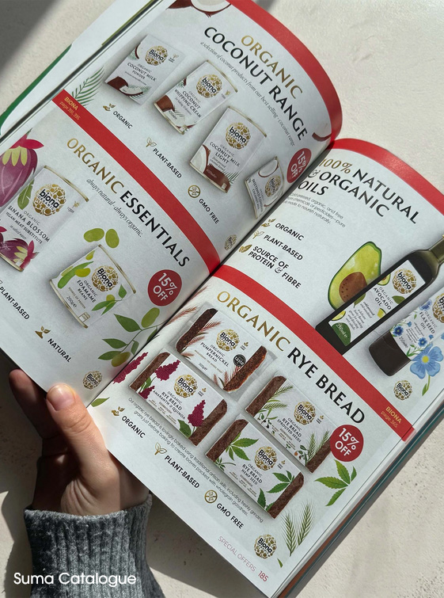
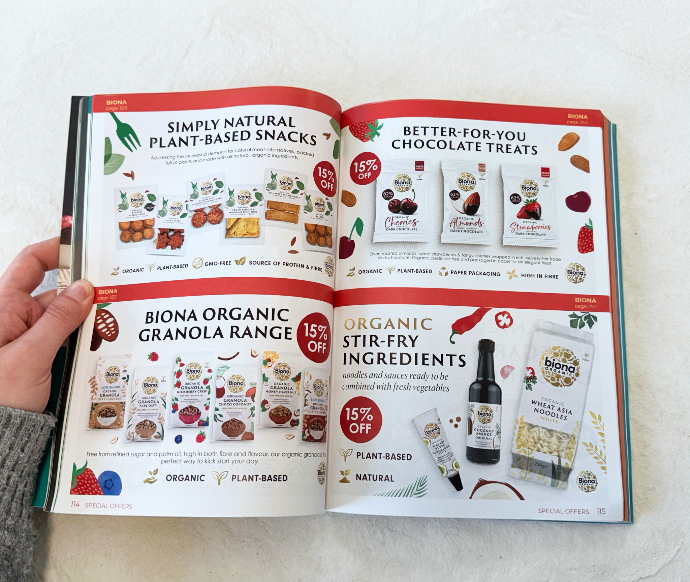
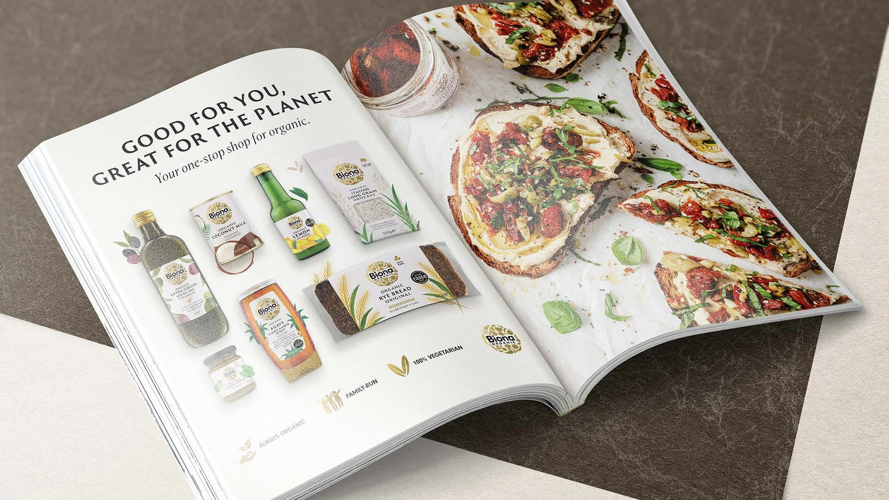
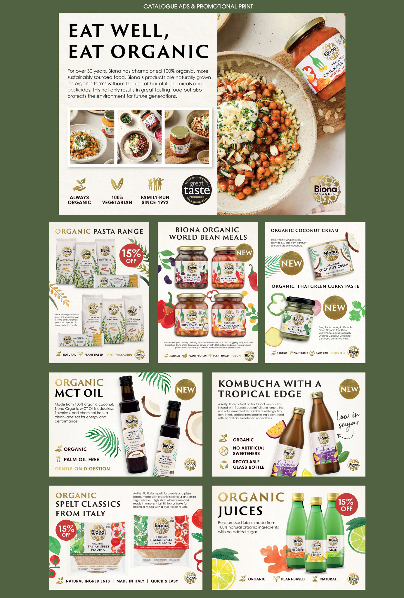
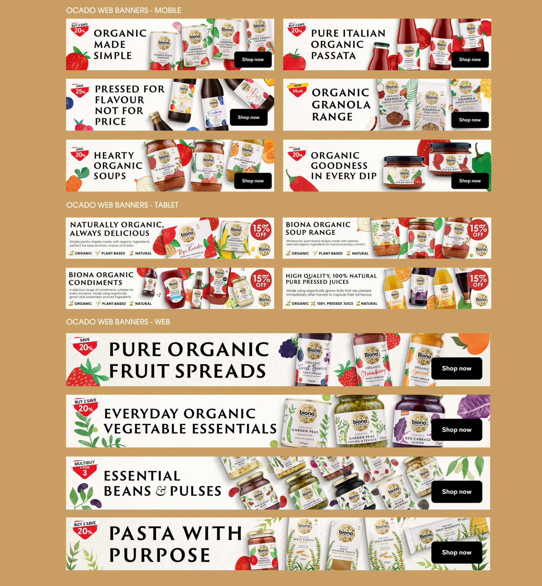
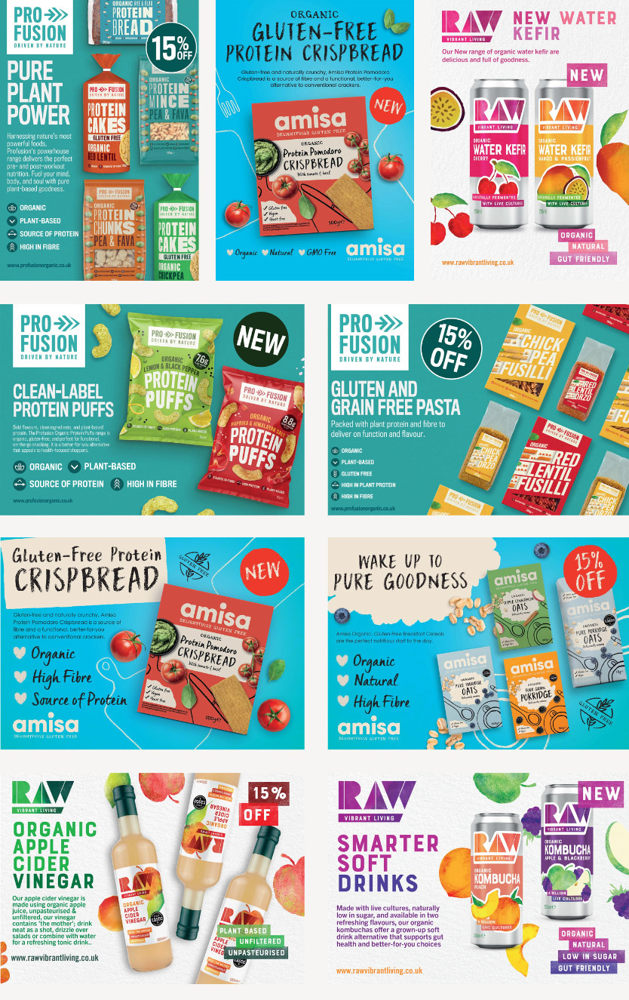
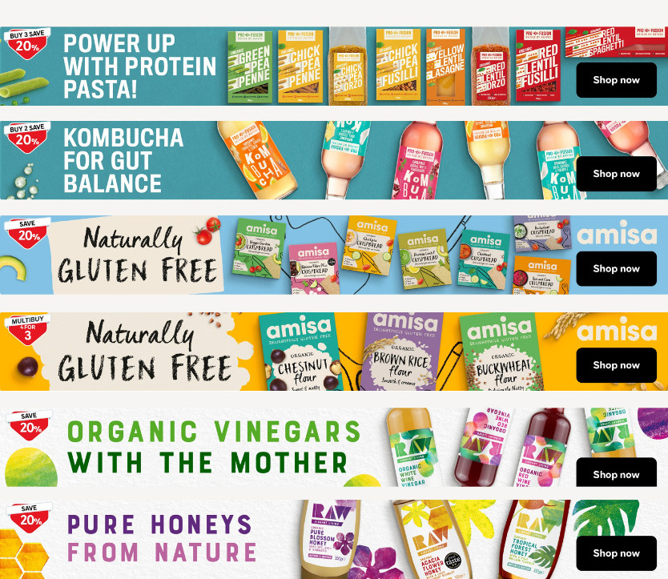

CASE STUDY / PRINT & DIGITAL
Print &
digital
ad hocs.
Print, Digital & Social Marketing Design
I created 320+ print & digital ads, and 280+ Ocado banners across multiple Windmill Organics brands, including Biona, RAW Vibrant Living, Bonsan, Profusion and Amisa. Below is a selection of the work.



01 / CATALOGUE ADS & PROMOTIONAL PRINT
Print
campaigns.
Catalogue spreads and promotional print designed to communicate product benefits, new launches and offers across the Biona range.

02 / ONLINE RETAIL CAMPAIGNS
Ocado
banners.
A selection of mobile, tablet and desktop banners, with each format adapting the same campaign message, imagery and brand hierarchy for a different space.

04 / ADDITIONAL BRANDS
Additional
brand ads.
Promotional catalogue artwork and digital banners created for Profusion, Amisa and RAW Vibrant Living, adapting the layouts to each brand's products and visual identity.
CATALOGUE ADS & PROMOTIONAL PRINT

OCADO BANNERS — WEB, TABLET & MOBILE
